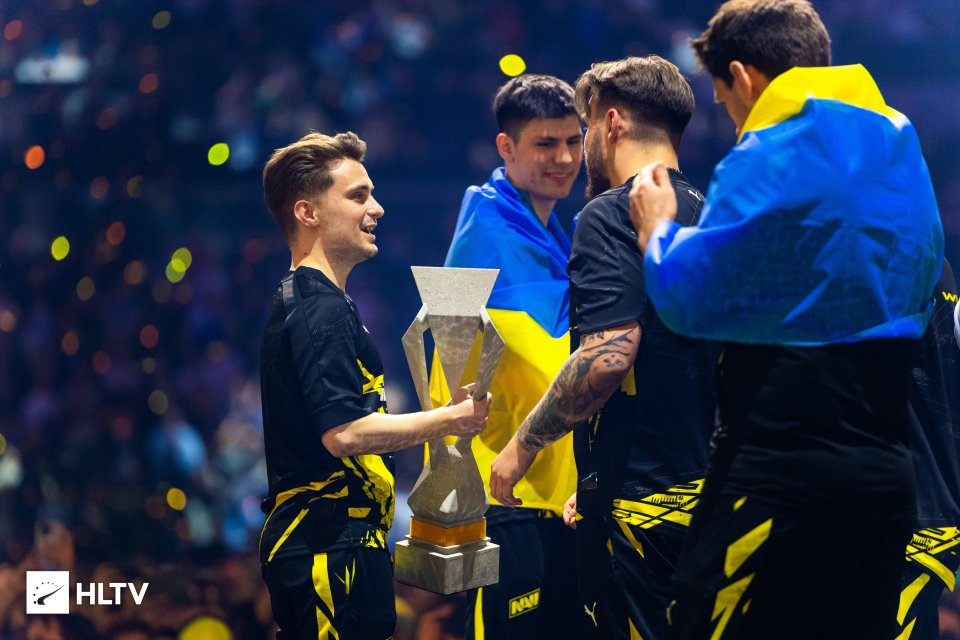

Istorie în Esports! Un român a câștigat turneul PGL Major, cel mai titrat trofeu de Counter-Strike
Ivan Mihai, cunoscut și drept iM- de comunitatea de jucători Esports, a scris istorie pentru România. După ce anul trecut a fost primul român calificat într-o finală Major, duminică seară, Mihai a urcat din nou pe scenă, de data această reușind să câștige trofeul.
Scena de Esports din România se dezvoltă din ce în ce mai rapid, iar asta se poate observa și prin
transferurile românilor la echipele de top din lume. În prim-plan se află Mihai Ivan, cunoscut și drept iM.
Acesta și-a început cariera la Nexus Club, cea mai titrată organizație din România.
După ceva timp, jucătorul român a fost transferat la GamerLegion, echipă alături de care a scris istorie
anul trecut. iM și GamerLegion au reușit să ajungă până în finala Major, trecând peste organizații de top
precum Heroic sau Fnatic. Totuși, Vitality s-a impus în marea finală (2-0).
iM, campion Major alături de NaVi! Istorie pentru România
După evoluțiile spectaculoase alături de GamerLegion, iM- a prins transferul vieții, la NaVi, una dintre
cele mai iubite și cunoscute organizații la nivel mondial. Aflată într-o formă destul de modestă înaintea
turneului PGL Major, NaVi nu era văzută ca o pretendentă la titlu, mai ales cu organizații precum FaZe și
Team Vitality în formă maximă.
Totuși, line-up-ul format din jucătorii Aleksib, w0nderful, iM, jL și b1t au reușit să obțină o performanță
unică, mai ales pentru o echipă ce are acest nucleu format de mai puțin de un an de zile. Echipa s-a impus
în marea finală împotriva celor de la FaZe, formație clasată pe primul loc la nivel mondial, cu următorul
scor:
NaVi - FaZe 13-11
FaZe - NaVi 13-2
NaVi - FaZe 2-13
Astfel, cu scorul de 2-1 la general, iM și NaVi au pus mână pe cel mai titrat trofeu și pe 500.000 de euro
din fondul total de premiere în valoare de 1,25 milioane de euro. Deși nu a fost cel mai bun jucător al
turneului, premiul de MVP fiind câștigat de jL, coechiperul său, iM a ajuns un impact important asupra
rezultatului, mai ales în moment cruciale ale finalei de Counter-Strike 2.